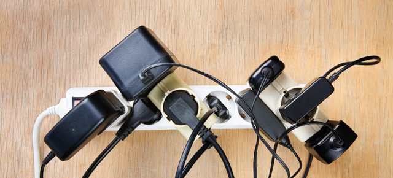

WHY CHOOSE PROVICTORS ?
Our device- ElecSaR solves the following problems and provides a way for the community to deal with these problems:
HIGH ELECTRICITY BILLS- In today's time as there is an extensive use of electricity in all aspects of living, this tends
to make the electricity bills tremendously high. ElecSaR provides a systematic way to deal with the problem of high electricity bills.
COLOSSAL WASTAGE OF ELECTRICITY- Our product reduces the chances of electricity wastage by making the consumer continuously aware of
its electricty consumption which indirectly makes them to turn off appliances and reduce the overall wastage.
OVERLOADING AND SHORT CIRCUITS WITH RISK OF HEALTH- Now a days due to high appliance usage by the people, the overloading
of circuits is often a common problem. This however can turn into dangerous and costly accidents such as short circuits
(leading to fires), etc. Our devide ElecSaR, brings to the table, an innovative method of solving such issues by making the
user consciously turn off unnecessary power-consuming devices; thus, significantly reducing the electrical load. This further
reduces the chances of overloading, short-circuits and fires which can cause harm to life and property.

OPPORTUNITIES
Our company aims at following the 12th UN sustainable goal of responsible consumption and production and aims to create awareness among the people.
The fossil fuels such as coal which are used to produce electricity in power plants are also conserved if the electricity is saved.
WHAT MAKES US DIFFERENT ?
We have designed our product in such a way that it uniquely stands apart from rest of the competition.
We have included several features that we feel are truly unique-
For motivating our consumers to use our product and save electricity, we reward them with exclusive “Eco Warrior” certificates, and special mentions.
Alongside this, we would also be providing the industries with a free trial period of 10 days, that they can claim to get the experience of our product and notice the changes for themselves.
Till now there is no device in the market which has the feature of displaying the energy consumed in every 10 min and notifying the customer when the energy consumption is exceptionally high.
.png)